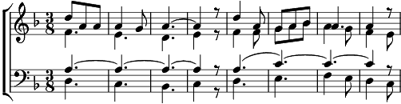

Refrain:
Entre le ciel et l'eau
Entre chênes et roseaux
Le batelier au gré du vent
Le batelier glisse hors du temps
1. Sa péniche tranquilement
Va de la plaine à l'océean
Tandis que lui, l'œil vagabond
Rejoint d'un bond les champs tout blonds
Refrain
2. Sa péniche sans se presser
Suit la rivière aux flancs boisés
Tandis que lui guette plus loin
Les jeux de mains des riverains.
Refrain
3. Sa péniche sent l'air marin
Et vogue alors avec entrain
Tandis que lui cligne des yeux
Complice heureux de tant de bleu.
Refrain
Coda:
Le batelier glisse hors du temps